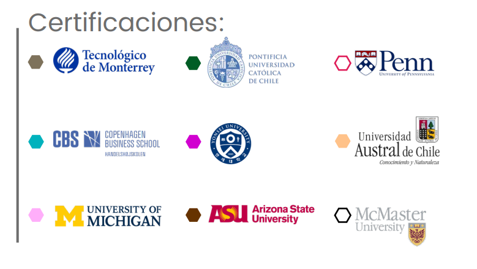

⚛️ Ingeniería Ejecutiva en Física
Aplica EQ | Categoría: Ingeniería
📖 ¿De qué trata esta Ingeniería?
Forma ingenieros con capacidad para diseñar soluciones sostenibles, utilizar instrumentos de medición avanzados y aplicar el método científico para resolver problemas complejos en áreas como automatización, materiales, control, energía o salud.
📌 Detalles del Programa
- ⏳ Duración: 4 años (12 cuatrimestres).
- 🛡️ Modalidad: 100% en línea.
- Plataforma: Blackboard con acceso 24/7.
- Clases: 1 a 2 sesiones semanales opcionales (grabadas).
- Soporte: Asistencia Lince y asesoría académica continua.
- Recursos: Biblioteca virtual, Office y software especializado.
🌟 Razones para Estudiar en UVM
- Doble Titulación: Opción a obtener título en EE.UU. con National Louis University.
- Certificaciones Coursera: Certificaciones laborales internacionales integradas al plan.
- Enfoque científico-tecnológico: Uso de tecnología aplicada, simulación, automatización y materiales avanzados.
- Alta empleabilidad: Hasta 80% mejora laboral tras egresar (Ipsos/UVM 2020).
💼 Oportunidades Laborales
Podrás trabajar en sectores de ciencia, industria y tecnología, como:
- 📌 Investigación aplicada: En instituciones académicas, centros de investigación o desarrollo científico-tecnológico.
- 📌 Automatización de procesos: Diseño de soluciones para control de calidad, producción o instrumentación electrónica.
- 📌 Desarrollo de materiales: Innovación en materiales sostenibles, semiconductores o compuestos avanzados.
- 📌 Sector farmacéutico y médico: Diseño de dispositivos o implementación de procesos tecnológicos en salud.
- 📌 Educación o divulgación científica: Actividades académicas, contenido educativo y comunicación de la ciencia.
🎓 Certificaciones Internacionales
🎯 Tips para Vender la Ingeniería
- 💡 "Ideal si te gusta la ciencia, los experimentos y resolver problemas complejos con base en modelos físicos y matemáticos."
- 🔍 "Podrás desarrollar soluciones innovadoras en tecnología, salud, automatización, materiales y más."
- 📌 "Esta carrera te permite vincularte con centros de investigación, industrias de alta tecnología o formar tu propio proyecto de innovación."
🛑 Objeciones Comunes y Respuestas
- ❓ "¿Debo ser bueno en matemáticas?"
✅ "No necesitas ser experto. La carrera te acompaña desde los fundamentos hasta el uso aplicado de herramientas científicas." - ❓ "¿Es muy teórica?"
✅ "No. Tiene materias prácticas de simulación, análisis de circuitos, automatización y diseño experimental." - ❓ "¿Solo puedo trabajar en investigación?"
✅ "No. También puedes trabajar en empresas tecnológicas, sector salud, energía, electrónica y más."